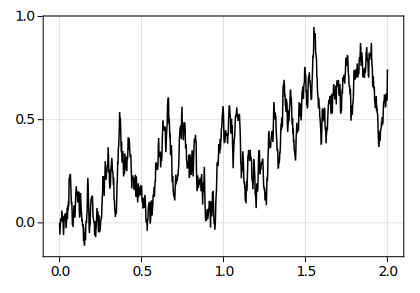

What are stochastic differential equations (SDEs)?
SDEs extend the theory of (ordinary) differential equations (DE) to include a source of randomness1
- DEs model a system’s dynamics and depend on system’s states, inputs, parameters, and time
